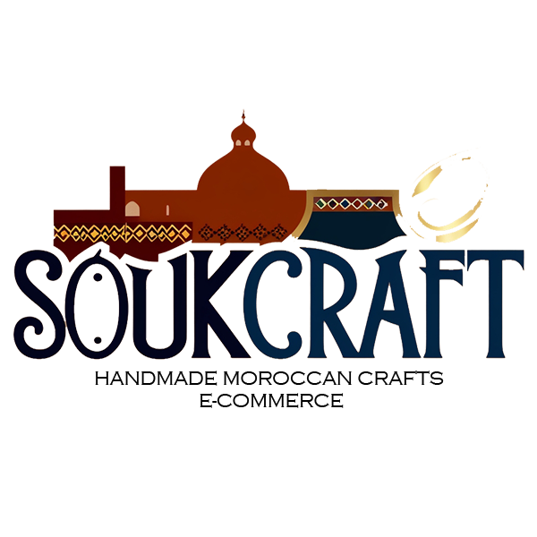

SoukCraft
SoukCraft est une boutique en ligne dédiée à la promotion et à la vente d’artisanat marocain authentique. Chaque article est soigneusement fabriqué à la main par des artisans locaux, en utilisant des techniques traditionnelles transmises de génération en génération. Notre mission est de préserver cet héritage culturel en offrant des produits uniques et éthiques, fabriqués avec des matériaux durables et respectueux de l'environnement. Chez SoukCraft, chaque achat soutient directement les artisans et leurs communautés, tout en apportant un morceau de l’art marocain chez vous.
|

|